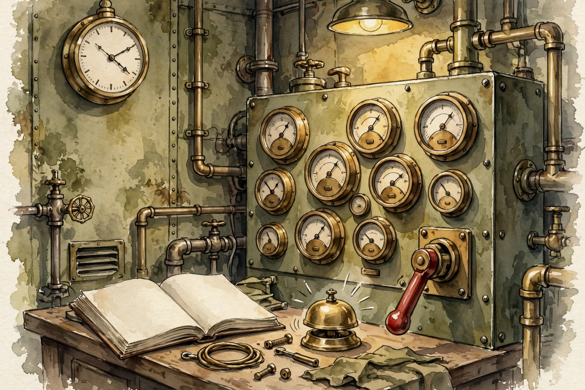

U07 hardened the system. U08 takes it to the frontier and into production: computer use, multimodal agents, science agents, long-running architectures, observability, the reliability ladder, scalability, interpretability, the project proposal, the incident runbook, the capstone, and an honest gap log. This companion narrates the lesson content concept by concept.
Source fact A claim or number taken from the lesson file content/v2/cs329z/lessons/u08_lesson.md. Each chart carries its lesson section.
Illustration A toy, picture, or simulation built for this page. It runs the lesson rule on tiny fixed inputs. It is not a lesson measurement.
Companion note My own synthesis. It joins lesson facts into advice. The lesson does not state it directly.
C01…C12 Concept numbers from the lesson.
Sourcing. No full lecture transcript exists for these sessions. Concepts C01 through C08 map to schedule title S20 at title level only. C09 through C11 map to the official project milestones (proposal Oct 9, final demo Dec 7-11). C12 is an explicit gap log in the lesson itself: the TBA guest slots S10 (26 Oct) and S16 (16 Nov) were not taught. This page narrates the lesson content, not a lecture recording.
Source fact The agent must click "the Submit button". How does "click Submit" become pixels? Toy: 20 web tasks, 12 succeed: 0.60. Of the 8 failures: 5 are coordinate errors (wrong x, y), 2 are latency, 1 is a changed page C01 contracts 2, 6.
The compounding math: grounding accuracy 0.75 per step, 4 steps per task. Open-loop prediction: 0.75^4 = 0.32. Observed 0.60. Verification and retry recover half the grounding errors. The loop beats the open-loop math C01 contract 6.
The loop doubled the open-loop math: 0.60 observed against 0.32 predicted.
Source fact The agent reads a chart. Does it need vision, or is the data table enough? Toy: 40 chart tasks. Vision + table: 32/40 = 0.80. Table only: 26/40 = 0.65. The 0.15 gap is the vision premium. Vision-only (no table): 0.55, worse than the "text-only agent" C02 contracts 2, 6.
The gap is 1.5 SE: suggestive, not conclusive. And vision tokens cost 10x text tokens. The budget can say table-only even when the premium is real C02 contracts 6, 11.
The table carries the task. Vision adds 0.15. Vision alone subtracts.
Source fact The agent proposes 10 hypotheses and tests them. Toy: 3 verify, hit rate 0.30. Each experiment costs $50 in compute and materials. Total $500 for 3 findings: $167 per finding. The verification cost dominates the thinking cost C03 contracts 2, 13.
The failure mode: a self-verifying simulation. Hit rate 0.90 means the oracle is broken, not that the agent is brilliant C03 contract 13.
Thinking is cheap. The experiment is $50. Budget the verification, not the hypotheses.
Source fact The task needs 500 steps. The flat agent dies at step 60. The hierarchical agent: a planner sets 10 milestones, workers execute 50 steps each, checkers verify. It completes 480/500 steps: 0.96 C04 contract 2.
The compounding argument: per-step success 0.99. Flat over 500 steps: 0.99^500 = 0.0066. Hierarchical with checks every 50 steps (check catches 0.9 of errors): per-milestone success near 0.99, 10 milestones: 0.90. The architecture buys 0.90 against 0.0066 C04 contract 6.
The checkers are the load-bearing part. Remove them and the number falls back toward flat C04 contract 8.
0.0066 to 0.90 is not a better model. It is a better architecture.
Source fact Toy: 100 tasks. Mean cost $0.48, p99 $1.60. The deploy adds a retry loop on one step. The dashboard shows that step cost up 3x: $0.05 before, $0.15 after. Alert fires at 2 SE above baseline. Time to diagnose: 25 minutes with the trace, 4 hours without C05 contracts 2, 6.
The attribution trap: retries not logged as spans. The dashboard shows $0.48 while the bill says $1.20. Log every span or the dashboard lies C05 contract 11.

Twenty-five minutes with the trace. Four hours without. The dashboard is the difference.
Source fact Toy: 20 failures. Retry fixes 12 at 1x cost each. Rollback to the last good state fixes 4 at 5x each. Escalate to a human handles 3 at 50x each. Compensate (undo the partial effects) handles 1 at 20x each. The ladder covers all 20. Total recovery cost is dominated by the 3 escalations. Mean time to recovery: 4 min C06 contracts 2, 6.
"reliability" in production is the ladder, not the model. Each level catches what the cheaper levels cannot C06 contract 1.
Twelve fixed for 1x. Three cost 50x each. The ladder spends where it must.
Source fact Toy: all-to-all coordination, 1000 agents: 1000 × 999 = 999,000 messages per round. Hub: each agent reports to the hub, the hub broadcasts: 2,000. The hub cuts 500x. At 1 ms per message: 999 s versus 2 s per round. The topology is the performance C07 contracts 2, 6.
"scalability" here is a topology choice, not a hardware purchase C07 contract 1.
Nine hundred ninety-nine seconds versus two. Same agents, different wiring.
Source fact Toy: 40 retrieved docs, the decision cites 3. The probe: remove those 3 and the decision flips. Remove 3 random others and the decision holds. Attribution confirmed on the toy. Cost: 4 extra runs C08 contract 6.
The standard is causal, not decorative. "the only signal" that counts is the flip test: "the model looked at it" is not evidence. The removal is C08 contracts 5, 6.
A citation is a claim. Removal is the evidence.
Source fact The lesson maps this concept to the official project milestones: proposal due Oct 9, then demos, then the paper video. The objective: write a reviewable proposal. A reviewable proposal states the task, the tuple (U06-C01), the metric, and the provenance boundary: what the benchmark proves and what it does not C09 contract 1.
Proposal checklist: lesson objective C09·1
The proposal is a contract with the grader: what will be claimed, and what will not.
Source fact Toy: cost-spike incident. With the runbook: diagnose in 25 min, roll back in 5. Without: 4 hours of ad-hoc debugging. The runbook buys 3.5 hours. Drill cost: 30 min quarterly C10 contracts 6, 14.
The stale-runbook trap: the runbook describes the system of last quarter. Drill it quarterly or it rots C10 contract 14.
Four hours of panic versus thirty minutes of procedure. The runbook is the cheaper incident.
Source fact The lesson maps this concept to the official project: final report and demo Dec 7-11. The objective: scope a capstone that can finish. It depends on all of U05 through U08 and the course integrity rules C11 contract 1.
The scoping rule from the unit: a capstone that needs a frontier result is a gamble. A capstone that composes taught pieces (optimize, measure, harden, deploy) is a plan C11 contract 1.
The demo date does not move. The scope must.
Source fact The lesson marks this concept as an explicit gap log, not taught content. The TBA guest slots S10 (26 Oct) and S16 (16 Nov) have no recorded content in the lesson file. There is nothing to narrate, and this companion will not invent it C12 contract 1.
An honest gap beats an invented lecture.
| # | Concept | Transferable principle |
|---|---|---|
| 01 | Computer use | Close the loop: act, screenshot, verify, retry. Never trust one grounding. |
| 02 | Multimodal | Run the ablation before paying 10x tokens. Pin the vision encoder version. |
| 03 | Science agents | Write the cost-per-finding formula before launching the loop. |
| 04 | Long runs | For long tasks: plan in milestones, execute in workers, verify at every boundary. |
| 05 | Observability | Build the cost dashboard before the deploy. Alert on the baseline. |
| 06 | Reliability | Build all four levels before launch: retry, rollback, escalate, compensate. |
| 07 | Scalability | Count the messages per round before adding agents. Star beats mesh. |
| 08 | Interpretability | Attribute decisions by removal. Budget the extra runs. |
| 09 | Proposal | Scope the capstone so it can finish. Write the limits list first. |
| 10 | Runbook | Write the runbook for the top incident first. Drill quarterly. |
| 11 | Capstone | Cut scope until the calendar fits, then freeze it. |
| 12 | Gap log | When the source is silent, say so on the page. |
Companion note The lesson plates u08_f01 through u08_f06 (before/after pairs from the original toys) sit behind this page's figures: f01 the grounding loop, f02 the modality ablation, f03 the cost dashboard, f04 the reliability ladder, f05 the hub topology, f06 the runbook timeline. Each chart above re-plots the same lesson numbers with its section citation.